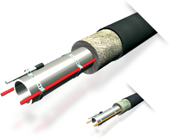

При наличии водопроводных и канализационных труб, которые находятся вне здания или в неотапливаемых помещения, их можно защитить от замерзания при помощи различных систем: 10 Вт/м при 5 для жиросодержащих стоков. При наличии водопроводных и канализационных труб, которые находятся вне здания или в неотапливаемых помещения, их можно защитить от замерзания при помощи различных систем: 10 Вт/м при 5 для жиросодержащих стоков.
При наличии водопроводных и канализационных труб, которые находятся вне здания или в неотапливаемых помещения, их можно защитить от замерзания при помощи различных систем: 10 Вт/м при 5 для жиросодержащих стоков.
При наличии водопроводных и канализационных труб, которые находятся вне здания или в неотапливаемых помещения, их можно защитить от замерзания при помощи различных систем: 10 Вт/м при 5 для жиросодержащих стоков.
